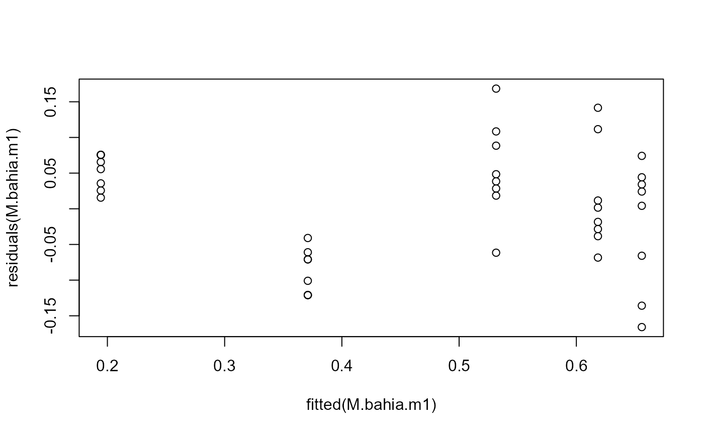
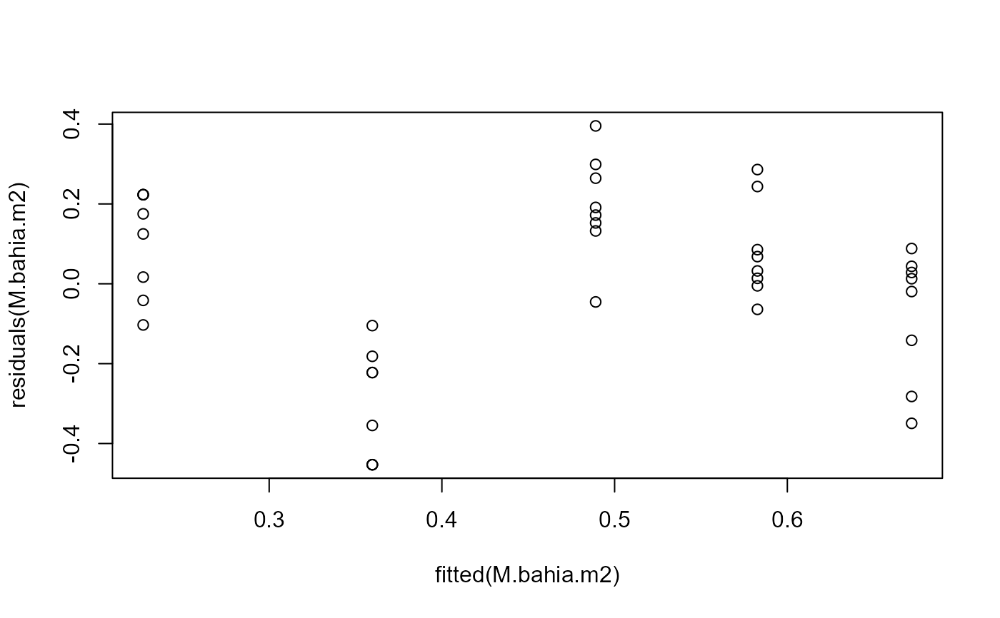
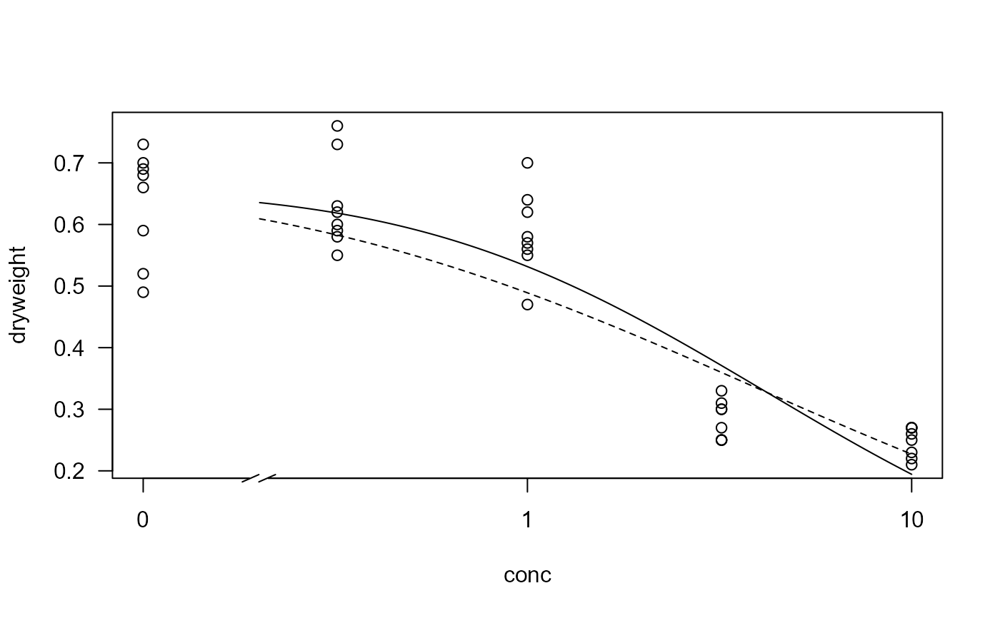
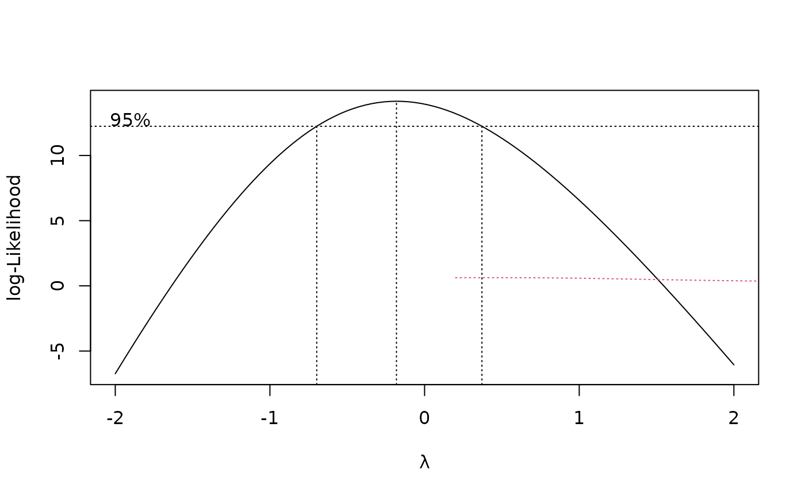

Effect of an effluent on the growth of mysid shrimp
M.bahia.RdJuvenile mysid shrimp (Mysidopsis bahia) were exposed to up to 32% effluent in a 7-day survival and growth test. The average weight per treatment replicate of surviving organisms was measured.
Usage
data(M.bahia)Format
A data frame with 40 observations on the following 2 variables.
conca numeric vector of effluent concentrations (%)
dryweighta numeric vector of average dry weights (mg)
Details
The data are analysed in Bruce and Versteeg (1992) using a log-normal dose-response model (using the logarithm with base 10).
At 32% there was complete mortality, and this justifies using a model where a lower asymptote of 0 is assumed.
Source
Bruce, R. D. and Versteeg, D. J. (1992) A statistical procedure for modeling continuous toxicity data, Environ. Toxicol. Chem., 11, 1485–1494.
Examples
library(drc)
M.bahia.m1 <- drm(dryweight~conc, data=M.bahia, fct=LN.3())
## Variation increasing
plot(fitted(M.bahia.m1), residuals(M.bahia.m1))

## Using transform-both-sides approach
M.bahia.m2 <- boxcox(M.bahia.m1, method = "anova")
summary(M.bahia.m2) # logarithm transformation
#>
#> Model fitted: Log-normal with lower limit at 0 (3 parms)
#>
#> Parameter estimates:
#>
#> Estimate Std. Error t-value p-value
#> b:(Intercept) -0.444809 0.056065 -7.9338 1.679e-09 ***
#> d:(Intercept) 0.671979 0.043185 15.5603 < 2.2e-16 ***
#> e:(Intercept) 3.905716 0.883294 4.4218 8.278e-05 ***
#> ---
#> Signif. codes: 0 '***' 0.001 '**' 0.01 '*' 0.05 '.' 0.1 ' ' 1
#>
#> Residual standard error:
#>
#> 0.2271316 (37 degrees of freedom)
#>
#> Non-normality/heterogeneity adjustment through Box-Cox transformation
#>
#> Estimated lambda: -0.182
#> Confidence interval for lambda: [-0.697, 0.371]
#>
## Variation roughly constant, but still not a great fit
plot(fitted(M.bahia.m2), residuals(M.bahia.m2))

## Visual comparison of fits
plot(M.bahia.m1, type="all", broken=TRUE)
plot(M.bahia.m2, add=TRUE, type="none", broken=TRUE, lty=2)

ED(M.bahia.m2, c(10,20,50), ci="fls")
#>
#> Estimated effective doses
#>
#> Estimate Std. Error
#> e:10 0.21900 0.11667
#> e:20 0.58881 0.24576
#> e:50 3.90572 0.88329
## A better fit
M.bahia.m3 <- boxcox(update(M.bahia.m1, fct = LN.4()), method = "anova")
#plot(fitted(M.bahia.m3), residuals(M.bahia.m3))
plot(M.bahia.m3, add=TRUE, type="none", broken=TRUE, lty=3, col=2)

ED(M.bahia.m3, c(10,20,50), ci="fls")
#>
#> Estimated effective doses
#>
#> Estimate Std. Error
#> e:10 0.95677 0.18697
#> e:20 1.17193 0.19303
#> e:50 1.72756 0.19818